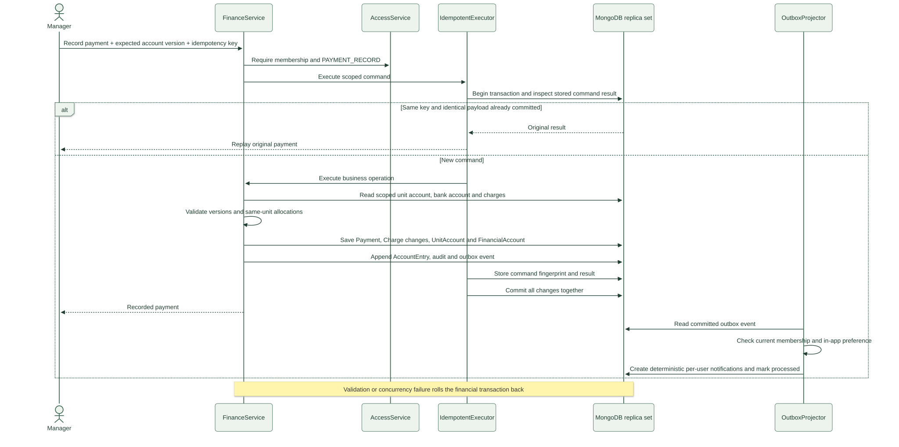

Current implementation. These are logical domain relationships, not database foreign keys. An aggregate is a consistency boundary. Composition owns values; ID references connect independent roots. Use each diagram's zoom slider to inspect details.
Responsibilities inside the monolith; arrows show collaboration, not deployment boundaries.

Separate ownership/tenancy, physical residence and application access. The dashed synchronization link is a current design gap.

Composition identifies owned values. Other arrows are ID references across independent roots.

Comments/history have separate persistence. Files, expense settlements and notification delivery have distinct lifecycles.

Independent financial roots are coordinated in one MongoDB transaction; notification delivery follows commit.
